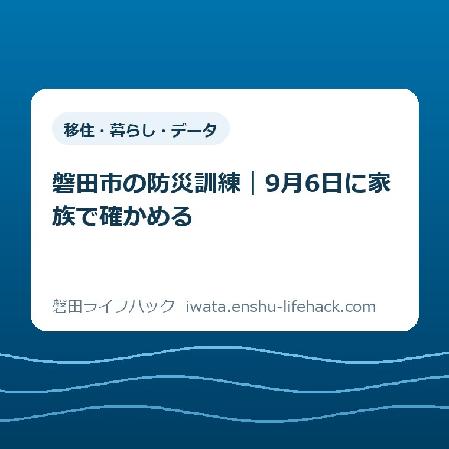

移住・暮らし・データ
磐田市の防災訓練｜9月6日に家族で確かめる

この記事の要点
Q. 自治会の訓練に出たら、家族で何を確かめればいい？
A. 2026年9月6日は統一訓練日ですが、時間と内容は自治会ごとに異なり得ます。安否の示し方、避難先と経路、水・食料7日分、携帯トイレ1人35回分、支援が必要な人の担当、情報の受け取り方を確認し、自治会案内と磐田市公式ページで照合してください。
導入——9月6日に一つ持ち帰る
磐田市の2026年度総合防災訓練は、9月6日の日曜日が統一訓練日です。自治会の回覧を見て、集合時刻や持ち物を確認しているご家庭もあると思います。
まず、その手間を軽く見たくありません。休日の朝に家族の予定を動かし、暑さに備え、地域の集合場所へ出る。それだけでも市民はすでに時間と体力を払っています。
だからこそ、訓練を「参加した」で終わらせるのは惜しい。家へ戻るまでに、家族の動きを一つ決めて持ち帰る日だと私は考えます。
2026年9月6日に決める一歩は、安否の伝え方です。無事なら家の外へ何を出すのか、誰が確認するのか、自治会の方法に合わせて家族全員が同じ答えを持ちます。
訓練の日時や内容は自治会・自主防災会で変わります。この記事で順番をつかみ、参加前後には自治会からの案内と磐田市公式ページで必ず確認してください。

まず、磐田市公式資料の事実を整理する
磐田市の「防災訓練」ページは、2026年度の総合防災訓練を9月6日の日曜日に実施すると案内しています。ページ更新日は2026年8月5日です。
位置付けは「磐田市自治会連合会統一訓練日」です。大規模地震を想定し、各自治会・自主防災会が訓練を行います。
市が公開した「令和8年度 総合防災訓練 概要」は、実施時間を午前9時から正午までの間としています。終了時刻は各自治会・自主防災会が判断します。
暑さや地域事情に応じ、夜間に行ったり、10月に時期を動かしたりすることも可能です。統一されているのは訓練日の基準で、全地区の分刻みの日程ではありません。
想定は、南海トラフ巨大地震が発生し、市内各地で震度6強以上を観測した状態です。身の安全の確保、避難、安否確認、救出・救助など、発災直後の初期対応を中心に課題を検証します。
重点項目のうち、安否確認は必ず実施する項目です。家庭での備え、共助による救助、人材台帳の整備も重点に置かれています。
大雨や洪水などの警報が出たとき、または災害発生のおそれがあるときは中止です。中止情報はいわたホッとメールなどで周知されます。
この記事の事実は、磐田市公式ページと添付概要を2026年9月6日に確認したものです。訓練後の報告や次回日程は変わるため、固定情報として扱わないでください。
統一訓練日でも、全市一律ではない
磐田市の総合防災訓練は、9月6日という基準日を市内で共有します。一方、開始・終了時刻、集合場所、実施内容は自治会の案内で確定します。
ここは意外に見落としやすい点です。「市の訓練は午前9時から」とだけ覚えると、地域の集合時刻や夜間実施と食い違うおそれがあります。
家族の予定表には「9時」と書く前に、回覧、連絡網、自治会の掲示を見ます。分からない場合は、自治会・自主防災会の担当者へ確認するのが先です。
磐田市は南北27.1キロメートルあります。海に近い地域、天竜川に近い地域、内陸では、避難の方向も道路条件も同じではありません。
市内の距離感は、磐田市は南北27キロある。市役所と四つの支所から暮らしの距離を測る記事で整理しています。市全体の話を、自宅の玄関からの距離へ置き換える材料になります。
全市で同じことをする安心感と、地区ごとに変える現実性は両立します。家族が従うのは、自宅の自治会から届いた具体的な時刻と場所です。
安否確認は「無事です」だけで終わらせない
2026年度の総合防災訓練では、安否確認が必ず実施する重点項目です。自治会全体が次の救助へ進むため、無事な世帯を早く見分ける役割があります。
市の概要は、黄色いタオルやカードなどを使う例を示しています。ただし、市の様式は一例であり、自治会がすでに用意した方法があれば、その方法を使います。
家族で確かめる最初の質問は「無事なら何をするか」です。タオルを出すのか、カードを掲げるのか、班へ連絡するのかを自治会の案内から一つ選びます。
次の質問は「誰がするか」です。父親が出勤中、母親が買い物中、子どもが学校にいる時間なら、自宅にいる人が同じ役割を担えるようにします。
安否を示す物は、押し入れの奥では使えません。玄関付近など、地震後に安全を確かめて取り出せる場所を家族で共有します。
表示できないほど家が被害を受けた場合は、表示より避難が先です。物を取りに危険な室内へ戻らないという線引きも、訓練日に言葉にします。
家族全員が在宅している前提だけで考えないことが肝心です。平日昼間、休日の外出中、夜間の三つを比べると、担当を固定しすぎた穴が見えます。
訓練の成果は、タオルを一度出した回数ではありません。別の家族でも迷わず同じ動きができる状態まで決めて、安否確認は完了です。
避難先は名前より、玄関からの経路を見る
家族の避難先は、自宅の災害リスクと災害の種類で変わります。地震、津波、洪水、土砂災害を一つの経路で済ませられるとは限りません。
最初に磐田市のハザードマップを確認する入口から、自宅周辺で見る災害の種類を確かめます。色だけでなく、避難する方向と通れない可能性がある場所も見ます。
次に避難所・避難場所の確認ページで、指定緊急避難場所と指定避難所の役割を分けます。名前が似ていても、逃げる場と生活する場は同じとは限りません。
地図上で最短の道が、発災時に歩きやすい道とも限りません。ブロック塀、川、用水路、線路、狭い道をまたぐか、2026年9月6日に実際の道で確認します。
子ども、高齢の家族、車いすを使う家族と一緒なら、歩く速さが変わります。大人一人の所要時間を家族全員の時間として使わないでください。
昼に通れる道でも、停電した夜は見え方が変わります。懐中電灯をどこから取り出すかまで含めて経路です。
集合場所は一つに決め切れない場合があります。第一候補が危険なときの第二候補を、住所や施設名まで紙に書きます。
迷ったまま全部の経路を歩く必要はありません。今日できる一歩は、玄関から第一候補までを家族で歩き、危険箇所を一つだけ記録することです。
7日分は、買う前に家にある量を数える
磐田市の総合防災訓練概要は、飲料水と食料を7日分備える目安を示しています。携帯トイレ・簡易トイレも7日分が目安です。
携帯トイレは1人1日5回で計算します。7日なら1人35回分です。4人家族なら140回分となり、思ったより大きな数になります。
この数字は、家計へ翻訳して初めて動けます。いきなり140回分を買う前に、家に何回分あるか、使用期限や保管状態はどうかを数えます。
飲料水も「ケースがある」で終わらせません。容量、本数、家族の人数を紙へ書き、7日分の目安との差を見ます。
食料は量だけでなく、加熱せず食べられるか、乳幼児や高齢の家族が食べられるかを分けます。普段食べない物だけを積むと、期限管理も難しくなります。
保管場所を一か所に集めすぎると、その部屋へ入れない場合に取り出せません。玄関付近、台所、二階など、家の状況に合わせて分ける方法もあります。
費用の優先順位は家庭ごとに違います。2026年9月6日に全部を買いそろえるのではなく、不足数が見えたら次の買い物で一品を足します。
備蓄表には、品名、数量、置き場所、期限、次に足す数を書きます。家族の誰か一人の記憶に置かず、冷蔵庫など全員が見られる場所へ置きます。

支援が必要な家族は、名前のある担当へ落とす
市の概要は、避難に支援が必要な人への対応と、地域の人材を生かす確認を訓練内容に挙げています。家族の中でも、助ける人と方法を具体化します。
「誰かが祖母を連れていく」では、発災時に誰も動かないおそれがあります。「在宅している長男が声をかけ、隣家の協力を求める」のように主語を置きます。
ただし、家族だけで安全に支援できない場面もあります。無理に抱え上げる方法を決めず、自治会の訓練で支援の相談先と集合方法を確認します。
防災士、看護師、消防関係などの資格や技能を地域で生かす人材台帳も重点項目です。登録や情報の扱いは自治会の説明を聞いて判断してください。
家族の支援計画は、本人を置き去りにして決めないことです。本人が不安な場面、持ち出したい薬や道具、歩ける距離を聞いてから紙にします。
評価——良い点は、安否確認を必須にしたこと
磐田市の2026年度総合防災訓練の良い点は、安否確認を必ず行う項目にしたことです。無事な世帯を早く除外できれば、助けが必要な家へ人手を向けやすくなります。
良い点の二つ目は、身の安全、避難、安否確認、救出・救助という順番を示したことです。訓練メニューの数より、命を守る初動の順序を前へ出しています。
良い点の三つ目は、暑さや地域事情で時間と時期を変えられることです。9月上旬の暑さを無視して同じ時刻に固定しない柔軟さがあります。
飲料水・食料7日分と携帯トイレ1人35回分まで数字を出した点も役立ちます。「十分に備える」という言葉より、家にある数との差を出せます。
市が安否確認シートを一例として用意し、自治会の既存様式も使えるとした点も現実的です。地域で続いている方法を捨てず、足りない地区には型を渡しています。
評価——注文したい点は、家族版一枚を増やすこと
磐田市の2026年度総合防災訓練へ、私から注文したい点があります。自治会長向けの概要に加え、各家庭が訓練後に持ち帰る一枚を、市のページからすぐ印刷できる形で置いてほしいです。
欄は六つで足ります。安否の示し方、第一避難先、危険な道、備蓄の不足、支援担当、中止情報の受け取り方です。
訓練の参加人数や実施報告だけでは、各家庭の迷いが減ったかは見えません。家族版一枚が埋まれば、次の訓練まで残る成果になります。
スマートフォンで読める版と、冷蔵庫に貼れる紙の版の両方があると使いやすい。一事業者としては、説明を増やすより、家で一つ決められる道具を望みます。
自治会の役員は、すでに日程調整、回覧、資機材、当日の誘導を担っています。家庭の確認まで役員へ背負わせず、市の共通様式で負担を減らす形がよいと考えます。
対案・結論——家族版一枚を10分で埋める
磐田市の防災訓練で家族が持ち帰る成果は、立派な防災計画ではありません。六つの欄を埋めた一枚です。
制度や訓練が整っていても、家族が動けなければ命を守る段取りにはなりません。誰が、どこへ、何を持って動くかを一つ決めます。
2026年9月6日に全部を完成させる必要はありません。安否の示し方だけ決まれば、今日の一歩として十分です。
次に第一避難先まで歩き、備蓄を数えます。不足を見つけたら、次の買い物と家族の予定へ一件だけ入れます。
災害後に住まいが被害を受けた場合は、片付けの前に写真を残す段取りもあります。磐田市の空き家と被災証明書の記事で、離れて住む親の家や空き家も含めた確認順を整理しています。
2026年9月6日に確認する順番
磐田市の総合防災訓練を家族の段取りへ変える順番は、自治会案内、安否、避難、備蓄、支援、情報の六段階です。
- 自治会の回覧や連絡で、実施時刻、集合場所、中止時の連絡を確認する。
- 無事なときの表示・連絡方法と、それを行う家族を決める。
- 第一避難先と第二候補を書き、玄関から第一候補まで歩く。
- 水・食料7日分、携帯トイレ1人35回分との差を数える。
- 避難に支援が必要な家族と、最初に声をかける人を決める。
- いわたホッとメールなど、情報を受け取れる端末を一台確認する。
中止や変更の情報は、災害時の情報入手方法を確認するページから受け取り方を見直せます。登録したつもりで通知が届かない状態を、訓練日に試します。
六つを一度に決められない家庭は、最初の二つだけで構いません。時刻と安否の示し方が分かれば、当日の動き出しが変わります。
紙は玄関か冷蔵庫に置きます。家族のスマートフォンにも写真を保存し、紙が見られない場所からでも確認できるようにします。
大石の視点——参加人数より、迷いを一つ減らす
大石浩之（磐田市／不動産業）として、ここからは公表情報ではなく私の意見を書きます。私は、防災訓練の成果を参加人数だけでは測りません。
家の相談では、所有者、相続人、管理する人が別々の場所にいると、誰が最初に動くかで段取りが止まります。防災も、主語が「誰か」のままでは動きません。
ただし、このテーマに使える個別の体験記録はありません。体験した出来事として話を作らず、実務で段取りを組む者としての判断に限ります。
私の言い切りは、訓練は参加しただけでは終わっていない、ということです。家族の迷いが一つ減って、初めて家庭の訓練になります。
私にも迷いがあります。家族全員に細かな役割を決めると、予定外の人が動けなくなるおそれがあります。だから担当者だけでなく、担当者が不在なら誰が代わるかまで書きます。
防災用品を買う話は分かりやすい一方、家計には限りがあります。先に数えて不足を見えるようにし、買う順番を決める方が続きます。
市民は訓練へ出るだけで手間を払っています。その手間を「啓発」で消費せず、2026年9月6日に家族の答えを一つ残す。それが私の見る実利です。
よくある質問
磐田市の2026年度総合防災訓練について、時刻、家庭の確認項目、参加できない場合の三点を整理します。
磐田市の総合防災訓練は全市で午前9時に始まりますか。
全世帯が一律に午前9時開始とは限りません。市の概要は2026年9月6日午前9時から正午までの間を示しますが、終了時刻は各自治会・自主防災会が判断します。暑さや地域事情により夜間や10月へ動かすことも可能です。自治会の回覧や連絡で、集合時刻と場所を確認してください。
防災訓練の日に家族で最低限何を確認しますか。
安否を地域へ示す方法、避難先と徒歩経路、水・食料7日分、携帯トイレ1人35回分、避難に支援が必要な家族を手伝う人、中止情報を受け取る方法の6項目です。すべてを買い足す前に、家にある量と置き場所を紙へ書くところから始められます。
自治会の防災訓練に参加できない場合はどうしますか。
参加できないことだけで備えがゼロになるわけではありません。2026年9月6日に家族で10分取り、安否の示し方と避難先を確認し、備蓄を数えてください。訓練の日時・内容は自治会ごとに異なるため、欠席時の安否確認方法や資料の受取方法は自治会へ確認してください。
まとめ——家族の答えを一つ残す
2026年9月6日は磐田市自治会連合会の統一訓練日です。ただし、時刻や内容は自治会・自主防災会で異なり得るため、地域の案内が家族の出発点です。
安否の示し方、避難先と経路、7日分の水・食料、1人35回分の携帯トイレ、支援担当、情報手段を一枚にします。
制度や地域の取り決めは個別条件で変わります。最後は自治会の案内と磐田市公式ページで最新情報を確認してください。
- 2026年9月6日は統一訓練日だが、開始・終了時刻や内容は自治会ごとに確認する。
- 安否確認は必須項目。家族は方法、置き場所、担当と代役まで決める。
- 水・食料は7日分、携帯トイレは1人35回分が目安。買う前に家の数量を数える。
- 今日の一歩は、家族版一枚のうち「安否の示し方」を埋めること。
参考にした公式情報
- 防災訓練／磐田市（2026年9月6日確認・ページ更新日2026年8月5日）
- 令和8年度 総合防災訓練 概要／磐田市（2026年9月6日確認）
- 地域の防災対策に関する各種資料／磐田市（2026年9月6日確認・ページ更新日2025年6月23日）

最終確認日：2026-09-06 ／ 本記事は公表情報と執筆者の見解を分けて記載しています。制度・数値・公開状況は変更される場合があるため、最新情報は磐田市公式ページでご確認ください。